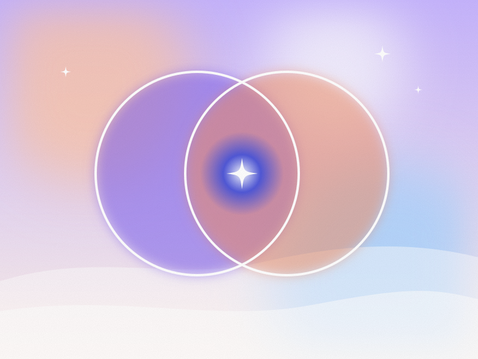
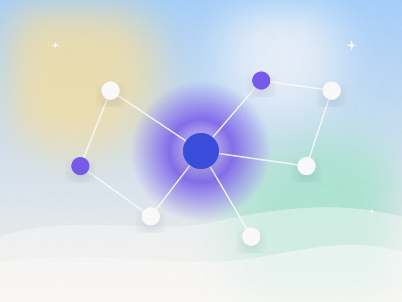

Dự án
Mọi việc tôi đã làm từ năm 2020, mới nhất trước. Đề tài nghiên cứu khoa học và dự án học phần có bài viết đầy đủ; các mục còn lại dẫn tới nơi chúng được nói đến.
-

Dữ liệu trẻ em trong ba hệ thống pháp luật
Đọc song song COPPA, Luật Bảo vệ dữ liệu cá nhân 2025 và GDPR để xem khi nào mỗi luật áp dụng cho một ứng dụng học sinh, sinh viên dùng.
Ghi chú đang viết
-

CISG tại Tòa án và tại trọng tài
Nghiên cứu tiếp theo của dự án CISG: trọng tài tại Việt Nam có xử lý Công ước khác Tòa án hay không.
Đề cương, tháng 11/2026
-

CISG tại Tòa án Việt Nam
Nhóm sàng lọc 197 văn bản tố tụng để xem CISG có cơ sở áp dụng hay không, rồi đối chiếu với những gì Tòa án thực sự viết. 27 hồ sơ có cơ sở; 2 hồ sơ áp dụng.
Slide, bản phân tích, công cụ sàng lọc
-

Quyền liên hệ gia đình của phạm nhân chưa thành niên
Luật Tư pháp người chưa thành niên 2024 và Luật Thi hành án hình sự 2025 bảo vệ việc liên hệ với gia đình đến đâu, so sánh theo bảy tiêu chí với chuẩn mực Liên hợp quốc và bốn cách tiếp cận nước ngoài.
Bản thảo nhóm 138 trang, tám kiến nghị
-

Công cụ sàng lọc hồ sơ CISG
Giúp thành viên nhóm sàng lọc bản án theo từng bước, lưu lý do, xem thống kê và luyện tập trên hồ sơ đã xong. Khi thiếu dữ kiện, công cụ dừng lại và yêu cầu người xem xét.
Mã nguồn hoạt động, tháng 10/2026
-
Dữ liệu cá nhân trong thu thập chứng cứ điện tử
Những bảo đảm nào cho dữ liệu cá nhân được áp dụng khi cơ quan có thẩm quyền thu thập chứng cứ điện tử trong vụ án hình sự, ở một số quốc gia và ở Việt Nam.
Giải Nhì cấp Khoa; nghiệm thu Xuất sắc
-

Thu thập thông điệp dữ liệu điện tử
Một số quốc gia dùng những biện pháp pháp lý nào để thu thập thông điệp dữ liệu điện tử, và Việt Nam có thể tham khảo điều gì.
Nghiệm thu loại Tốt, tháng 10/2025
-

Tài xế công nghệ và hợp đồng gọi xe
Một số quốc gia bảo vệ tài xế làm việc qua nền tảng gọi xe như thế nào, và điều đó gợi ý gì cho Việt Nam.
Giải Nhì Hội nghị Nhà khoa học trẻ 2024; đăng trong kỷ yếu
-

Chứng minh trong vụ án hành chính
Đề tài đầu tiên tôi làm chủ nhiệm: một số quốc gia xử lý việc chứng minh trong tố tụng hành chính ra sao, và Việt Nam có thể tham khảo điều gì.
Giải Khuyến khích cấp Khoa; nghiệm thu Xuất sắc
-

Dự án nhóm trong các học phần Luật và Quản trị kinh doanh
Từ năm nhất, tôi thường làm trưởng nhóm các bài tập lớn: chia việc, tổng hợp nghiên cứu và giữ tiến độ.
Báo cáo và bài thuyết trình nhóm
-

The Shift
Một website tôi thiết kế khi học phổ thông, với kế hoạch nội dung, các chuỗi bài mới và bài viết có nghiên cứu về pháp luật cho học sinh.
Website và chuỗi nội dung